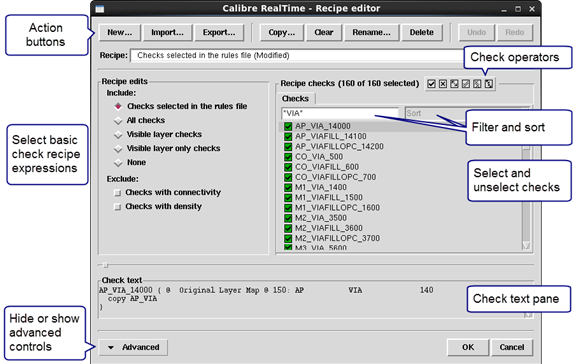

Calibre RealTime Recipe Editor Dialog Box
To access: Click Edit in the Calibre RealTime Options Dialog Box (Innovus). The Edit button is next to the Check Selection Recipe dropdown list.
The Recipe editor dialog box includes controls to create, copy, save, and edit a check selection recipe for Calibre RealTime Digital.
Description
The Calibre RealTime Recipe Editor dialog box has two modes: Basic (Figure 1) and Advanced (Figure 2). See the tables following the figures for descriptions of the fields and selections in the dialog box.
Use the basic controls for the following tasks:
Include and exclude basic recipe expressions.
Include and exclude individual checks or check groups.
Use the advanced controls for the following tasks:
Develop advanced recipe expressions involving selected layers, rule check comments, and check groups.
View and edit the recipe definition.
Figure 1. Calibre RealTime Recipe Editor Dialog Box Basic ControlsFigure 2. Calibre RealTime Recipe Editor Dialog Box Advanced Controls
Objects
Control |
Type |
Description |
|---|---|---|
New |
Button |
Creates a new recipe. |
Import |
Button |
Open a recipe that has been saved to file. If the configuration file includes a recipe definition with the same name, the tool displays a warning message that the recipe already exists. |
Export |
Button |
Save a recipe to a file with the .rcp file extension. Note: User recipes are automatically saved to the Session Configuration File in Calibre RealTime Digital; saving a recipe to file provides a backup for the check recipe definition. |
Copy |
Button |
Create a copy of the selected recipe. |
Clear |
Button |
Clear all check selections. |
Rename |
Button |
Rename the selected check recipe. |
Delete |
Button |
Delete the selected check recipe. |
Undo |
Button |
As described. |
Redo |
Button |
As described. |
Control |
Type |
Description |
|---|---|---|
Recipe |
Dropdown list |
Specifies the active recipe. |
Include |
Radio button |
Specifies checks to include:
A Layer statement specifying a name for an original layer is required in the rule file in order to use the “Visible layer checks” and “Visible layer only checks” selections. In addition, for the Cadence Innovus integration, the layer map file (streamOut.map) must exist in the working directory or be set with an environment variable; see “GDS Layer Map for Calibre RealTime Digital in Cadence Innovus”. |
Exclude |
Checkbox |
Specifies checks to exclude:
|
Recipe checks |
Pane |
Displays tabs with the rule checks and check groups in the rule file; the Groups tab is only displayed if check groups are defined in the rule file. A green check mark indicates that the rule check or group is included in the recipe. A red X indicates the item is not included. Click the checkbox next to an item to include or exclude it from the recipe. In the Checks tab you can right-click for a menu to add and subtract checks. See the recipe definition controls in Figure 2 in “Advanced Editing of Check Selection Recipes”. You can also enter a filter pattern to filter the rule checks that are shown in the Checks tab. |
Check text |
Pane |
Displays the check text for the selected rule check. |
Advanced |
Button |
Toggle between basic and advanced editing controls. |
Control |
Type |
Description |
|---|---|---|
Recipe |
Dropdown list |
Specifies the active recipe. |
Expression (categories) |
Pane |
The list of available expression categories for the check selection recipe. See the next table for the definition of each expression. |
Expression (view) |
Pane |
The expression view displays the elements that make up the expression. Click the checkbox next to a check name to include or exclude the check from the recipe or right-click for a menu to add and subtract checks. Depending on the selected expression category, there may be a “Pattern” field. Enter a wildcard pattern in the “Pattern” field to filter the items displayed in the expression view. |
Addition |
Selection |
Add the expression or equivalent checks to the check recipe. |
Subtraction |
Selection |
Subtract (exclude) the expression or equivalent checks from the check recipe. |
Apply expression |
Button |
Update the check recipe with the selected expression. The recipe definition is not modified until you click either Apply expression or Apply checks. |
Apply checks |
Button |
Resolve the selected expression into a list of rule checks and update the check recipe. The recipe definition is not modified until you click either Apply expression or Apply checks. |
Recipe definition |
Pane |
Displays the expressions that make up the recipe definition. Use the following buttons to operate on the selected expression: |
Recipe checks |
Pane |
Displays tabs with the rule checks and check groups in the rule file; the Groups tab is only displayed if check groups are defined in the rule file. A green check mark indicates that the rule check or group is included in the recipe. A red X indicates the item is not included. Click the checkbox next to an item to include or exclude it from the recipe. In the Checks tab you can right-click for a menu to add and subtract checks. See the recipe definition controls in Figure 2 in “Advanced Editing of Check Selection Recipes”. You can also enter a filter pattern to filter the rule checks that are shown in the Checks tab. |
Check text |
Pane |
Displays the check text for the selected rule check. |
Advanced |
Button |
Toggle between basic and advanced editing controls. |
Expression Category |
Definition and Usage |
|---|---|
The expression categories appear in the Expression categories pane in the dialog box, as shown in Figure 2. |
|
All checks |
All checks in the rule file, except those excluded by preprocessor directives. DRC [Un]Select Check and DFM [Un]Select Check statements are not considered. All checks are listed and enabled in the expression view. Click the checkbox next to a check name to include or exclude the check from the recipe or right-click for a menu to add and subtract checks. |
Checks selected in the rules file |
Checks selected in the rule file. This expression and “Checks not selected in the rules file” are the only expressions that obey the DRC [Un]Select Check statements in the rule file. Note that if the rule file does not include any DRC [Un]Select Check statements, then all checks are executed; this is the same behavior as for batch Calibre nmDRC. Checks selected in the rule file are listed and enabled in the expression view. Click the checkbox next to a check name to include or exclude the check from the recipe or right-click for a menu to add and subtract checks. |
Checks not selected in the rules file |
Checks not selected in the rule file. This expression and “Checks selected in the rules file” are the only expressions that obey DRC [Un]Select Check statements in the rule file. Checks not selected in the rule file are listed and enabled in the expression view. Click the checkbox next to a check name to include or exclude the check from the recipe or right-click for a menu to add and subtract checks. Tip: You can subtract this expression at the end of a recipe definition to ensure that only checks selected in the rule file are included in the recipe. |
Checks by rule check comments |
Choose checks by filtering on the rule check comment. Enter a wildcard pattern in the “Pattern” field. For example, enter *metal1* to have only checks that include “metal1” in the check text comment listed in the Preview pane. Click the checkbox next to a check name to include or exclude the check from the recipe or right-click for a menu to add and subtract checks. See “Rule Comments” in the Calibre Verification User’s Manual. |
Checks by group |
Choose checks according to rule check groups. |
Checks with selected layer only |
Choose checks by layer, where the rule check includes only the indicated layer. Original layers that are the only layer in a rule check are displayed in the expression view. Layers can be expanded to view the rule checks. Click the checkbox next to a layer to enable the rule checks that include only the indicated layer or right-click for a menu to select checks. Click the Preview tab to view the list of enabled and disabled checks. |
Checks including selected layer |
Choose checks by layer, where the rule check includes the indicated layer and possibly other layers. Original layers that are included in a rule check are displayed in the expression view. Layers that are included in a rule check can be expanded to view the rule checks. Click the checkbox next to a layer to enable the rule checks that include the indicated layer; rule checks that include other layers in addition to the indicated layer are also enabled. Click the Preview tab to view the list of enabled checks. |
Checks with connectivity |
Choose checks that include connectivity. All checks with connectivity are listed and enabled in the expression view. Click the checkbox next to a check name to include or exclude the check from the recipe or right-click for a menu to add and subtract checks. |
Checks without connectivity |
Choose checks that do not include connectivity. All checks without connectivity are listed and enabled in the expression view. Click the checkbox next to a check name to include or exclude the check from the recipe or right-click for a menu to add and subtract checks. |
Checks with density |
Choose Density checks. All checks with the Density operation are listed and enabled in the expression view; this includes checks in which the Density operation is used to derive an input layer for the check. Click the checkbox next to a check name to include or exclude the check from the recipe or right-click for a menu to add and subtract checks. |
Checks without density |
Choose checks that do not include the Density operation. All checks without the Density operation are listed and enabled in the expression view. Click the checkbox next to a check name to include or exclude the check from the recipe or right-click for a menu to add and subtract checks. |
Visible layer only checks1 |
Choose checks that use visible layers only and no invisible layers. |
Visible layer checks1 |
Choose all checks that use at least one of the layers visible in the window. |
Invisible layer only checks1 |
Choose checks that use invisible layers only and no visible layers. |
Invisible layer checks1 |
Choose all checks that use at least one of the invisible layers in the window. |
Non-empty checks |
Choose checks that produced results. This category is only present after a Calibre RealTime Digital run. |
Empty checks |
Choose checks that have not produced results. This category is only present after a Calibre RealTime Digital run. |
1 In the Cadence Innovus integration, in order to use the check expressions involving visible layers, the layer map file (streamOut.map) must exist in the working directory or be set with an environment variable.
For information on the layer map file, see “GDS Layer Map for Calibre RealTime Digital in Cadence Innovus”.